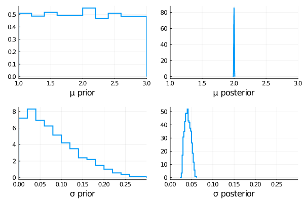

KissABC
Usage guide
The ingredients you need to use Approximate Bayesian Computation:
- A simulation which depends on some parameters, able to generate datasets similar to your target dataset if parameters are tuned
- A prior distribution over such parameters
- A distance function to compare generated dataset to the true dataset
We will start with a simple example, we have a dataset generated according to an Normal distribution whose parameters are unknown
tdata=randn(1000) .* 0.04 .+ 2;we are ofcourse able to simulate normal random numbers, so this constitutes our simulation
sim((μ,σ), param) = randn(100) .* σ .+ μ;The second ingredient is a prior over the parameters μ and σ
using Distributions
using KissABC
prior=Factored(
Uniform(1,3),
Truncated(Normal(0,0.1), 0, 100)
);we have chosen a uniform distribution over the interval [1,3] for μ and a normal distribution truncated over ℝ⁺ for σ.
Now all that we need is a distance function to compare the true dataset to the simulated dataset, for this purpose a Kolmogorov-Smirnoff distance is good
using StatsBase
function ksdist(x,y)
p1=ecdf(x)
p2=ecdf(y)
r=[x;y]
maximum(abs.(p1.(r)-p2.(r)))
endksdist (generic function with 1 method)Now we are all set, we can use ABCDE which is sequential Monte Carlo algorithm with an adaptive proposal, to simulate the posterior distribution for this model, inferring μ and σ
plan=ABCplan(prior, sim, tdata, ksdist)
res,Δ = ABCDE(plan, 0.1, nparticles=2000,generations=150,parallel=true, verbose=false);the parameters we chose are: a tolerance on distances equal to 0.1, a number of simulated particles equal to 200, we enabled Threaded parallelism, and ofcourse the first four parameters are the ingredients we set in the previous steps, the simulated posterior results are in res, while in Δ we can find the distances calculated for each sample. We can now extract the inference results:
prsample=[rand(prior) for i in 1:2000] #some samples from the prior for comparison
μ_pr=getindex.(prsample,1) # μ samples from the prior
σ_pr=getindex.(prsample,2) # σ samples from the prior
μ_p=getindex.(res,1) # μ samples from the posterior
σ_p=getindex.(res,2); # σ samples from the posteriorand plotting prior and posterior side by side we get:
using Plots
a = stephist(μ_pr,xlims=(1,3),xlabel="μ prior",leg=false,lw=2,normalize=true)
b = stephist(σ_pr,xlims=(0,0.3),xlabel="σ prior",leg=false,lw=2,normalize=true)
ap = stephist(μ_p, xlims=(1,3),xlabel="μ posterior",leg=false,lw=2,normalize=true)
bp = stephist(σ_p, xlims=(0,0.3),xlabel="σ posterior",leg=false,lw=2,normalize=true)
plot(a,ap,b,bp)
we can see that the algorithm has correctly inferred both parameters, this exact recipe will work for much more complicated models and simulations, with some tuning.
This page was generated using Literate.jl.